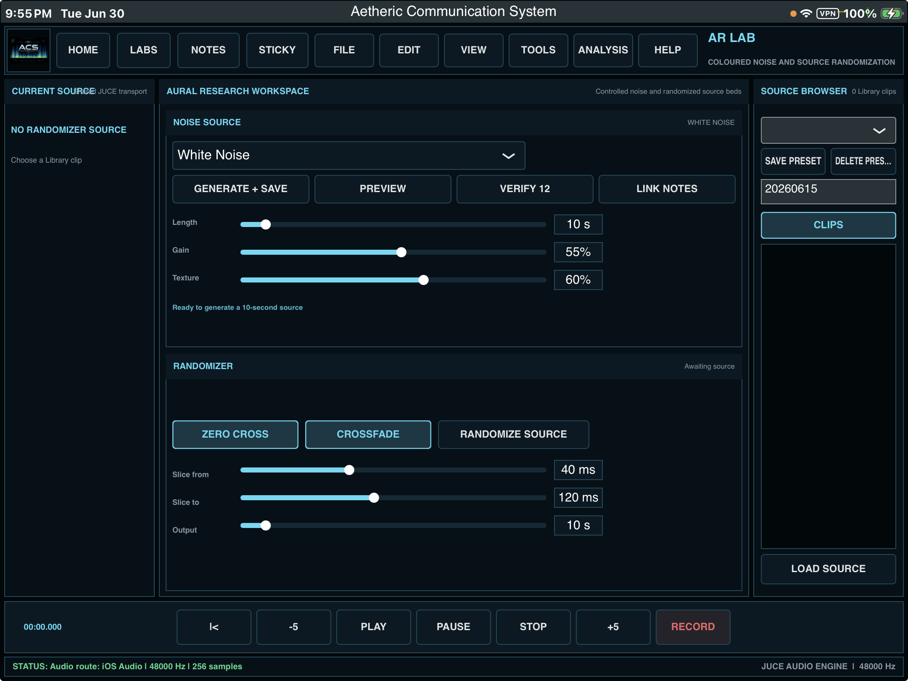

EVP and ITC are treated as experimental research, not guaranteed communication.
The Paranormal Initiative has always actively researched Electronic Voice Phenomena and Instrumental
Transcommunication. This work is approached carefully: sessions are documented, controls matter,
and no recording or device output is presented as proof simply because it is unusual.
Research position by Todd Wayne · Aetheric Communication System (ACS)
Stance: Possibility and Plausibility
This is not a debunk and not a faith claim. It is a research posture: these phenomena are
possible, and the accumulated evidence makes them plausible. They are
not, and cannot be, definitively proven.
What is not claimed
That these phenomena are definitively paranormal.
That they are not paranormal.
That there is "proof" of anything.
What is held
They are possible.
The cumulative case makes them plausible.
We say "plausible, unrebutted evidence" — never "proof."
Why "proof" is the wrong word. The paranormal, by definition, sits outside the ordinary causal
framework. The moment a phenomenon is definitively proven — repeatable, mechanistically modeled,
predictively controlled — it graduates out of "paranormal" and becomes simply normal. So
"definitive proof of the paranormal" is a category error: proof normalizes, and the paranormal, by that fact,
cannot be definitively proven. "Definitive proof" belongs to mathematics and logic; empirical science does not
prove, it fails to falsify.
The Continuum of Contact
One working idea runs through many ITC traditions: a purposely constructed instrument or medium may give
an anomalous signal a surface to organize through. Each era has used a different surface. Scrying water,
reflective fields, radios, recorders, and software tools are not the same method, but they ask a related
research question: can structure appear in a controlled ambiguous field beyond ordinary expectation,
contamination, or pattern-making?
Era / Instrument
Substrate
Plausibility (not proof)
Water / mirror scrying
Reflective surface
Experimental: strong need for lighting, angle, and expectation controls
Crystal / smoke / flame
Semi-chaotic moving substrate
Experimental: pattern emergence must be separated from ordinary perception
Planchette / Ouija
Human touch and movement
Contested: ideomotor action and group expectation remain major alternatives
Spirit photography (1860s)
Film / photographic process
Historically important, but vulnerable to fraud, exposure, and artifact concerns
Edison's "Spirit Phone" (1920)
Telephony concept
Conceptual influence, not an established working instrument
EVP - Jurgenson / Raudive
Tape hiss / room sound / radio static
Research-relevant: voice-like candidates require source and contamination review
Ghost Box / SB-7
AM/FM sweep
Contested: broadcast fragments and prompting remain major alternatives
Bacci direct voice
Modified radio
Historically significant claim area requiring careful source controls
Scole Experiment
Darkroom / sealed setup
Research-significant case history, still interpreted cautiously
Software / AI-assisted
Spectrograms, synthesis, analysis tools
Useful for study and visualization; contested if treated as an originating source
Every tier succeeds or fails on the same two questions: (1) Can consciousness impress a signal on physical media
— not only through a living nervous system? (2) Can that signal be told apart from the operator's own
apophenia, pareidolia, and ideoplasty?
Why Word-Bank Devices Are Methodologically Weak
Spirit Boxes, Ghost Boxes, and Ovilus-type devices are predefined. The output is constrained to a known
set — a radio spectrum or a manufacturer's word list. This makes them easily misconstrued, and the
misconstruction is structurally fair.
Ovilus-type
Selects a whole word from a fixed dictionary and speaks it. The critic's objection is
fatal on its face: "The device said the word. Not an agent. The word came from the list." Even if one
believes the selection is guided, the form of the output is pre-packaged.
Spirit Box
Sweeps live broadcast radio. The fragments are real station bleed. The critic says: "The device heard
snippets of actual broadcasts." Same problem — the material is externally sourced and constrained.
The ATransC finding (adopted here). "Radio-sweep produces communication — Status: not
established by the archive's blind-listening work. Ordinary broadcast fragments and prompting remain major
alternatives." Both device types are possible and plausible but not proven — and easy to dismiss under analysis.
The Phoneme / Allophone Edge
Phonemes are the smallest units of sound that change meaning (the /p/ in pat vs. the
/b/ in bat). Allophones are the non-meaning-changing variants of a phoneme. Both sit
beneath the word. Generating either is categorically different from outputting predefined words.
A recorder captures phonemes and allophones — the acoustic atoms of speech. When a question is asked into an
empty room and a voice returns on the recording, the material is sub-lexical fragments, not a sentence from a
dictionary. That is why we do not accept that every such capture is mere audio pareidolia:
Pareidolia is perceptual — the brain hearing words in noise as it listens. But a voice
on the file is in the data, listener-independent. It is replayable, shareable,
analyzable. The anomaly is the presence of an unexplained voice-signal on the file; what it
means remains open to interpretation. Both can be true at once.
This is why the building blocks of speech — phonemes and allophones — are more credible than a random
word bank or predefined words. Word banks output lexical units selected from a finite set (the "canned"
objection applies). Phoneme/allophone generation outputs sub-lexical acoustic atoms that are not words and
not from a list. The assembly into perceived speech happens after generation, by ear — exactly as
in spontaneous EVP. The "canned dictionary" objection does not apply, and the substrate faithfully models how
classic EVP presents: fragments, not sentences.
PH Lab builds a phoneme / allophone sound pool, then randomly pulls from it and randomizes order so the typed input is not preserved.
ACS V3: The Instrument
Aetheric Communication System V3 is an ITC/EVP experimentation device for macOS and iPadOS. It continues the
research program of the pioneers — Jürgenson, Raudive, Estep, the Butlers — by providing
instrumentation, not novelty.
ACS V3 — the integrated ITC / EVP experimentation workspace.
Lab
Function
Research role
ITC Lab
Multitrack EVP / ITC workspace
The capture and experimentation bench
PH Lab
Controlled phoneme & allophone generation
The differentiator — generates sub-lexical material, not word-bank output
AR Lab
Noise & randomization laboratory
The entropy substrate ("the chaos is the medium")
SA Lab
Professional spectral & waveform analysis
The discrimination tool — how we fight underdetermination
Phoneme Lab
Curated speech library & chain builder
Builds sequences of speech-atoms for study
ACS Library
Shared audio, sessions & evidence
Provenance and record-keeping
Research / Notes
Annotation
The reasoning layer real research requires
ITC Lab — where generated and captured audio is loaded and analyzed.

AR Lab — the entropy substrate for structured emergence.
SA Lab — spectral and waveform analysis, the discrimination layer.Phoneme Lab — curated speech library and chain builder.
How PH Lab Actually Works
PH Lab does not select words. It builds a phoneme / allophone sound pool from a curated bank
derived from the CMU Pronouncing Dictionary (ARPABET symbols — aa, ah, sh, th, ao…), sliced across
eight dialect regions and many speakers. The generator then randomly pulls from that pool and
randomizes the order so the typed input is not preserved. The output is a stream of speech-like
acoustic atoms — precisely the material from which spontaneous EVP appears to assemble.
Ovilus / Spirit Box
ACS PH Lab
Output unit
Whole words / broadcast snippets
Sub-lexical acoustic atoms (phonemes/allophones)
Source of material
Fixed list / radio spectrum
Generated phoneme stream
"Canned" objection
Applies (finite set)
Does not apply
Resembles spontaneous EVP?
No (whole words)
Yes (fragments)
Assembly of meaning
Device does it
Hearer / agent does it post-hoc
Built-In Scholarly Discipline
ACS is not a toy. Its reference library enforces the plausibility standard at the code level:
Evidence tiers A–E (independent replication → speculation/testimonial) grade the support for a claim, never its importance.
An ACS Language Standard requires every conclusion to state: what was observed, which controls were applied, how reviewers responded, which ordinary explanations remain, which hypothesis is considered, and what result would change the conclusion.
A Universal Session Protocol — define the question and rejection criteria before recording, run controls, preserve raw originals, obtain blind transcriptions, report all candidates and negative results.
Explicit findings: "Radio-sweep produces communication — not established"; "ITC proves survival after death — requires evidence beyond anomaly detection."
"I am alone. I ask a question. A voice comes back on the recording. Where did it come from? I do not accept that
it is all audio pareidolia." Reframed to be unassailable:
1
Pareidolia is the wrong word for a captured signal
Pareidolia is perceptual — the brain hearing words in noise as you listen. A voice on the file is in the data, listener-independent. So: the anomalous signal is real and unexplained; the interpretation of what it says remains subject to pareidolia. Both can be held.
2
"Ruled out all possibilities" is the operational claim
EVP's strength is not "I heard a voice" — it is "a voice-like signal appeared on a clean recorder with no source in the environment, after RFI / EMI / self-bleed were excluded." That is the anomaly worth researching. PH Lab is the controlled version: instead of waiting for noise to organize, we generate the building blocks and study whether — and how — structure emerges.
The Honest Counter-Case
A rigorous treatment holds these without flinching:
Apophenia / pareidolia — the brain is a meaning-extraction machine; it will hear words in any noise.
Ideoplasty — the operator's own mind may shape the ambiguous material into form. The competing explanation for nearly every ITC claim.
RFI / natural causes — radio sweep picks up real stations; unexplained voices may be bleed.
Underdetermination — the core weakness: a voice in static is consistent with (a) discarnate agent, (b) operator psi, (c) apophenia/ideoplasty, and (d) RF bleed. Same observation, none ruled out.
So current evidence does not conclusively prove Strong ITC — but it also does not rule
out the possibility. That is precisely where "plausible" lives. The Strong Form
(an independent discarnate agent is the source) requires the hardest assumption: that consciousness can exist and
act independent of a living brain. The Weak Form (the instrument-plus-noise field is a
psi-conducive configuration that facilitates the operator's own anomalous cognition) is far more compatible with
what we know — assuming psi exists at all, studied since J.B. Rhine. ACS supports both as live
hypotheses; it asserts neither as fact.
Conclusion: The Only Scientifically Honest Stance
Claim
Status
"This is definitive proof of the paranormal."
Impossible (category error + not scientific)
"This is definitely NOT paranormal."
Also impossible (cannot prove a negative; underdetermined)
"This is possible and the evidence makes it plausible."
The only scientifically honest stance
We build instruments, not conclusions. ACS V3 continues the work of the pioneers by providing controlled
phoneme/allophone generation, rigorous capture, and honest analysis — so that the question "where did the voice
come from?" can be asked with discipline rather than enthusiasm. The answer remains open. That openness is not a
weakness. It is the method.